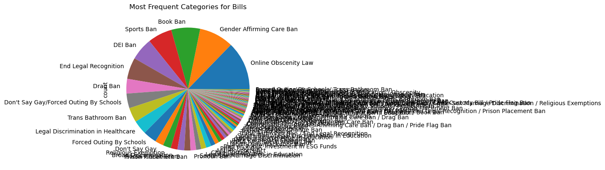

import pandas as pd
import matplotlib.pyplot as plt
---------------------------------------------------------------------------
ModuleNotFoundError Traceback (most recent call last)
Cell In[1], line 1
----> 1 import pandas as pd
2 import matplotlib.pyplot as plt
ModuleNotFoundError: No module named 'pandas'
df = pd.read_csv('https://bit.ly/anti-trans-tracker')
df.info()
<class 'pandas.core.frame.DataFrame'>
RangeIndex: 674 entries, 0 to 673
Data columns (total 19 columns):
# Column Non-Null Count Dtype
--- ------ -------------- -----
0 State 674 non-null object
1 Number 674 non-null object
2 Summary 673 non-null object
3 Bill Type 674 non-null object
4 Date 674 non-null object
5 Status 674 non-null object
6 Youth State Risk 674 non-null object
7 Adult State Risk 674 non-null object
8 Notes 365 non-null object
9 URL 674 non-null object
10 Sponsors 530 non-null object
11 Calendar 255 non-null object
12 History 526 non-null object
13 Manual Status 626 non-null object
14 Change Hash 527 non-null object
15 Bill ID 527 non-null float64
16 PDF 527 non-null object
17 Bill Analysis (AI Automated) 4 non-null object
18 Bill PDF 508 non-null object
dtypes: float64(1), object(18)
memory usage: 100.2+ KB
df.columns
Index(['State', 'Number', 'Summary', 'Bill Type', 'Date', 'Status',
'Youth State Risk', 'Adult State Risk', 'Notes', 'URL', 'Sponsors',
'Calendar', 'History', 'Manual Status', 'Change Hash', 'Bill ID', 'PDF',
'Bill Analysis (AI Automated)', 'Bill PDF'],
dtype='object')
df['Summary']
0 Sex-based terms, defined; vital statistics, r...
1 Crimes and offenses, further provides for obsc...
2 Education, instruction about gender identity a...
3 Consumer Protection; online distribution of ma...
4 Consumer protection; filter requirements on In...
...
669 Sex offender registration-promoting obscenity.
670 An act regarding compelled speech and state em...
671 Statute of limitations-medical procedures on m...
672 Children gender change prohibition.
673 The equality state not equity state act.
Name: Summary, Length: 674, dtype: object
df.shape
(674, 19)
df.sort_values(['Bill Type', 'State'], inplace = True)
sorted = df.sort_values(['Date'])
sorted.tail(20)
| State | Number | Summary | Bill Type | Date | Status | Youth State Risk | Adult State Risk | Notes | URL | Sponsors | Calendar | History | Manual Status | Change Hash | Bill ID | Bill Analysis (AI Automated) | Bill PDF | ||
|---|---|---|---|---|---|---|---|---|---|---|---|---|---|---|---|---|---|---|---|
| 542 | US | HJR165 | Providing for congressional disapproval under ... | Sports Ban / Legal Discrimination in Education | 7/23/2024 | Received in the Senate. Read twice. Placed on ... | High | High | This is in regards to the Biden Administration... | https://legiscan.com/US/bill/HJR165/2023 | NaN | NaN | NaN | Pass One Chamber | NaN | NaN | NaN | NaN | NaN |
| 348 | New Hampshire | HB1205 | Relative to women's school sports. | Sports Ban | 7/26/2024 | Signed by Governor Sununu 07/19/2024; Chapter ... | High | High | A Fairness in Women's Sports Act; grades 5-12;... | https://legiscan.com/NH/bill/HB1205/2024 | Louise Andrus, Leonard Turcotte, Riche Colcomb... | Hearing 2024-01-29 14:00 Legislative Office Bu... | H 2023-12-01 Introduced 01/03/2024 and referre... | Enacted | 62262783f3496d5e636ebbdb3fa1e3e1 | 1785354.0 | https://gencourt.state.nh.us/bill_status/legac... | NaN | https://drive.google.com/open?id=18tA4rt6rcZwl... |
| 359 | New Hampshire | HB619 | To require a person to attain the age of major... | Gender Affirming Care Ban | 7/26/2024 | Signed by Governor Sununu 07/19/2024; Chapter ... | High | High | Gender affirming genital (internal and externa... | https://legiscan.com/NH/bill/HB619/2024 | Terry Roy, James Spillane, Nikki McCarter, Kev... | Hearing 2023-03-07 10:00 State House Reps Hall... | H 2023-01-12 Introduced (in recess of) 01/05/2... | Enacted | cd9250d226ff19cd7773181151b1df14 | 1793146.0 | https://gencourt.state.nh.us/bill_status/legac... | NaN | https://drive.google.com/open?id=1yhMCQWJ0mtuz... |
| 358 | New Hampshire | HB396 | Permitting classification of individuals based... | Trans Bathroom Ban | 7/26/2024 | Vetoed by Governor Sununu 07/19/2024 | High | High | Prison, Sports, Bathroom ban; last year's vers... | https://legiscan.com/NH/bill/HB396/2024 | Jim Kofalt, Alicia Lekas, Judy Aron, Katherine... | Hearing 2023-01-26 16:00 Legislative Office Bu... | H 2023-01-09 Introduced (in recess of) 01/05/2... | Vetoed | 90afadc3ce172bcb30049077bb415bbc | 1793186.0 | https://gencourt.state.nh.us/bill_status/legac... | NaN | https://drive.google.com/open?id=12qR0RPo6zbL0... |
| 351 | New Hampshire | HB1312 | Requiring parental notification of student hea... | Don't Say Gay/Forced Outing By Schools | 7/26/2024 | Signed by Governor Sununu 07/19/2024; Chapter ... | High | High | Two week notice to parents required for curric... | https://legiscan.com/NH/bill/HB1312/2024 | Kristine Perez, Louise Andrus, Jim Kofalt, San... | Hearing 2024-02-06 09:30 Legislative Office Bu... | H 2023-12-06 Introduced 01/03/2024 and referre... | Enacted | 9e2c38e4aa1a339e21ef97d72b559d2e | 1793411.0 | https://gencourt.state.nh.us/bill_status/legac... | NaN | https://drive.google.com/open?id=1uA6bf3gc692g... |
| 539 | US | HB9218 | To establish a clear and consistent biological... | Sports Ban / Trans Bathroom Ban / End Legal Re... | 7/30/2024 | Referred to the House Committee on the Judiciary. | High | High | "Defining Male and Female Act of 2024"; text n... | https://legiscan.com/US/bill/HB9218/2023 | NaN | NaN | NaN | NaN | NaN | NaN | NaN | NaN | NaN |
| 546 | US | SB2073 | A bill to amend title 31, United States Code, ... | KOSA-Type Social Media Law | 7/31/2024 | Message on Senate action sent to the House. | High | High | Kids Online Safety and Privacy Act | https://legiscan.com/US/bill/SB2073/2023 | NaN | NaN | NaN | Pass One Chamber | NaN | NaN | NaN | NaN | NaN |
| 1 | Alabama | HB4 | Crimes and offenses, further provides for obsc... | Book Ban | 7/8/2024 | Pending House Judiciary | Worst | Worst | Prefiled for 2025 session; re: K12 & public li... | https://legiscan.com/AL/bill/HB4/2025 | NaN | NaN | NaN | Roll Over | NaN | NaN | NaN | NaN | NaN |
| 551 | US | SB4638 | A bill to authorize appropriations for fiscal ... | Appropriations / Gender Affirming Care Ban | 7/8/2024 | Placed on Senate Legislative Calendar under Ge... | High | High | Defense Appropriations bill that includes a ba... | https://legiscan.com/US/bill/SB4638/2023 | NaN | NaN | NaN | Pass Committee | NaN | NaN | NaN | NaN | NaN |
| 531 | US | HB8070 | To authorize appropriations for fiscal year 20... | Appropriations / Gender Affirming Care Ban / D... | 7/8/2024 | Received in the Senate. | High | High | DoD appropriations omnibus bill which includes... | https://legiscan.com/US/bill/HB8070/2023 | NaN | NaN | NaN | Pass One Chamber | NaN | NaN | NaN | NaN | NaN |
| 362 | New Hampshire | SB375 | Relative to biological sex in student athletics. | Sports Ban | 9/11/2024 | 10/03/2024 10:30 am Legislative Office Buildin... | High | High | Original version used definition of "sex" from... | https://legiscan.com/NH/bill/SB375/2024 | Kevin Avard, Carrie Gendreau, Ruth Ward, Willi... | Hearing 2024-01-30 09:00 Room 101, Legislative... | S 2023-12-12 To Be Introduced 01/03/2024 and R... | Failed | 799c06ffcff0a1186f561f9c9f4ec2fb | 1793318.0 | https://gencourt.state.nh.us/bill_status/legac... | NaN | https://drive.google.com/open?id=1BtSCK9w_aHiM... |
| 384 | Ohio | HB245 | Prohibits certain adult cabaret performances | Drag Ban | 9/12/2023 | Referred to committee: Criminal Justice | Worst | High | No 2024 activity shown on LegiScan as of 9/20/... | https://legiscan.com/OH/bill/HB245/2023 | Angela King, Josh Williams, Tim Barhorst, Adam... | Hearing 2023-11-15 15:15 Room 121 | H 2023-07-17 Introduced, H 2023-09-12 Referred... | NaN | 3c1d1c1e938075b26a652d56b8b17845 | 1774630.0 | https://search-prod.lis.state.oh.us/solarapi/v... | NaN | https://drive.google.com/open?id=1jLosEjD-e-tK... |
| 536 | US | HB8998 | Making appropriations for the Department of th... | Appropriations / Gender Affirming Care Ban / D... | 9/12/2024 | Read twice. Placed on Senate Legislative Calen... | High | High | DoInterior appropriations which includes prohi... | https://legiscan.com/US/bill/HB8998/2023 | NaN | NaN | NaN | Pass One Chamber | NaN | NaN | NaN | NaN | NaN |
| 532 | US | HB8580 | Making appropriations for military constructio... | Appropriations / Pride Flag Ban / Gender Affir... | 9/12/2024 | Placed on Senate Legislative Calendar under Ge... | High | High | Contains riders which ban funding GAC for vete... | https://legiscan.com/US/bill/HB8580/2023 | NaN | NaN | NaN | Pass One Chamber | NaN | NaN | NaN | NaN | NaN |
| 540 | US | HB9586 | To prohibit Federal funds from being used to p... | Gender Affirming Care Ban | 9/12/2024 | Referred to the Committee on Energy and Commer... | High | High | Blocks GAC funds for those in custody of DHS o... | https://legiscan.com/US/bill/HB9586/2023 | NaN | NaN | NaN | NaN | NaN | NaN | NaN | NaN | NaN |
| 535 | US | HB8774 | Making appropriations for the Department of De... | Appropriations / Gender Affirming Care Ban / D... | 9/12/2024 | Read twice. Placed on Senate Legislative Calen... | High | High | DoD appropriations omnibus bill which includes... | https://legiscan.com/US/bill/HB8774/2023 | NaN | NaN | NaN | Pass One Chamber | NaN | NaN | NaN | NaN | NaN |
| 534 | US | HB8771 | Making appropriations for the Department of St... | Appropriations / Gender Affirming Care Ban / D... | 9/12/2024 | Read twice. Placed on Senate Legislative Calen... | High | High | Various amendments include restrictions on usi... | https://legiscan.com/US/bill/HB8771/2023 | NaN | NaN | NaN | Pass One Chamber | NaN | NaN | NaN | NaN | NaN |
| 389 | Ohio | HB8 | Enact the Parents' Bill of Rights | Don't Say Gay/Forced Outing By Schools | 9/13/2023 | Referred to committee: Education | Worst | High | No 2024 activity shown on LegiScan as of 9/20/... | https://legiscan.com/OH/bill/HB8/2023 | D. J. Swearingen, Sara Carruthers, Cindy Abram... | Hearing 2023-03-07 16:00 Room 116, Hearing 202... | H 2023-02-15 Introduced, H 2023-02-16 Referred... | Pass One Chamber | cd75f02d462e332cd905ce2d3e8d12b3 | 1711236.0 | https://search-prod.lis.state.oh.us/solarapi/v... | NaN | https://drive.google.com/open?id=12BHJQHSv0X4i... |
| 530 | US | HB7891 | To protect the safety of children on the inter... | KOSA-Type Social Media Law | 9/18/2024 | Ordered to be Reported (Amended) by Voice Vote. | High | High | Kids Online Safety Act - House Version | https://legiscan.com/US/bill/HB7891/2023 | NaN | NaN | NaN | Pass Committee | NaN | NaN | NaN | NaN | NaN |
| 438 | Pennsylvania | HB2546 | An Act amending the act of March 10, 1949 (P.L... | DEI Ban | 9/6/2024 | Referred to EDUCATION | Low | Low | DEI office and training ban explicitly referen... | https://legiscan.com/PA/bill/HB2546/2023 | NaN | NaN | NaN | NaN | NaN | NaN | NaN | NaN | NaN |
df.value_counts('Bill Type')
Bill Type
Online Obscenity Law 86
Gender Affirming Care Ban 61
Book Ban 51
Sports Ban 43
DEI Ban 40
..
Bathroom Ban/Prison Placement Ban 1
Omnibus Anti-trans Bill 1
Ban On Public Investment in ESG Funds 1
Drag Ban/Book Ban 1
Forced Outing By Schools/ Trans Bathroom Ban 1
Name: count, Length: 83, dtype: int64
ny = df['State'] == 'New York'
pd.set_option('display.max_colwidth', None)
df[ny]['Summary']
379 Expands insurance coverage for in vitro fertilization; includes coverage under individual policies; provides coverage for three complete oocyte retrievals and in vitro fertilization with unlimited embryo transfers.
381 Removes restrictions of three-cycle coverage for in vitro fertilization; mandates individual insurance coverage of in vitro.
382 Expands insurance coverage for in vitro fertilization; includes coverage under individual policies; provides coverage for three complete oocyte retrievals and in vitro fertilization with unlimited embryo transfers.
378 Protects women's sports in middle school and high school from unfair competition.
380 Protects women's sports in middle school and high school from unfair competition.
Name: Summary, dtype: object
df['Bill Type'].str.contains('Book')
169 False
171 False
179 False
187 False
283 False
...
245 False
266 False
117 False
487 False
503 False
Name: Bill Type, Length: 674, dtype: bool
books = df['Bill Type'].str.contains('Book')
type(books)
pandas.core.series.Series
df[books].value_counts('State')
State
Missouri 6
West Virginia 4
Idaho 4
Tennessee 4
Wyoming 3
New Hampshire 3
Maryland 3
Mississippi 2
South Carolina 2
Oklahoma 2
Alabama 2
Louisiana 2
Kentucky 2
Kansas 2
Georgia 2
Nebraska 2
California 1
Ohio 1
Pennsylvania 1
Iowa 1
South Dakota 1
Indiana 1
US 1
Utah 1
Virginia 1
Name: count, dtype: int64
df.plot()
<Axes: >
# method chaining
# nlargest()
fig = df.value_counts('Bill Type').plot(kind='pie', xlabel='Number of Bills', title='Most Frequent Categories for Bills').get_figure()

fig.savefig('test.png')
df.columns
Index(['State', 'Number', 'Summary', 'Bill Type', 'Date', 'Status',
'Youth State Risk', 'Adult State Risk', 'Notes', 'URL', 'Sponsors',
'Calendar', 'History', 'Manual Status', 'Change Hash', 'Bill ID', 'PDF',
'Bill Analysis (AI Automated)', 'Bill PDF'],
dtype='object')
df.value_counts('Adult State Risk').plot(kind='bar')
<Axes: xlabel='Adult State Risk'>
# pd.to_datetime('2018-10-26 12:00:00.0000000011',format='%Y-%m-%d %H:%M:%S.%f')
pd.to_datetime(df['Date'], format='%m/%d/%Y')
---------------------------------------------------------------------------
ValueError Traceback (most recent call last)
Cell In[69], line 3
1 # pd.to_datetime('2018-10-26 12:00:00.0000000011',format='%Y-%m-%d %H:%M:%S.%f')
----> 3 pd.to_datetime(df['Date'], format='%m/%d/%Y')
File /opt/anaconda3/lib/python3.11/site-packages/pandas/core/tools/datetimes.py:1063, in to_datetime(arg, errors, dayfirst, yearfirst, utc, format, exact, unit, infer_datetime_format, origin, cache)
1061 result = arg.tz_localize("utc")
1062 elif isinstance(arg, ABCSeries):
-> 1063 cache_array = _maybe_cache(arg, format, cache, convert_listlike)
1064 if not cache_array.empty:
1065 result = arg.map(cache_array)
File /opt/anaconda3/lib/python3.11/site-packages/pandas/core/tools/datetimes.py:247, in _maybe_cache(arg, format, cache, convert_listlike)
245 unique_dates = unique(arg)
246 if len(unique_dates) < len(arg):
--> 247 cache_dates = convert_listlike(unique_dates, format)
248 # GH#45319
249 try:
File /opt/anaconda3/lib/python3.11/site-packages/pandas/core/tools/datetimes.py:433, in _convert_listlike_datetimes(arg, format, name, utc, unit, errors, dayfirst, yearfirst, exact)
431 # `format` could be inferred, or user didn't ask for mixed-format parsing.
432 if format is not None and format != "mixed":
--> 433 return _array_strptime_with_fallback(arg, name, utc, format, exact, errors)
435 result, tz_parsed = objects_to_datetime64(
436 arg,
437 dayfirst=dayfirst,
(...)
441 allow_object=True,
442 )
444 if tz_parsed is not None:
445 # We can take a shortcut since the datetime64 numpy array
446 # is in UTC
File /opt/anaconda3/lib/python3.11/site-packages/pandas/core/tools/datetimes.py:467, in _array_strptime_with_fallback(arg, name, utc, fmt, exact, errors)
456 def _array_strptime_with_fallback(
457 arg,
458 name,
(...)
462 errors: str,
463 ) -> Index:
464 """
465 Call array_strptime, with fallback behavior depending on 'errors'.
466 """
--> 467 result, tz_out = array_strptime(arg, fmt, exact=exact, errors=errors, utc=utc)
468 if tz_out is not None:
469 unit = np.datetime_data(result.dtype)[0]
File strptime.pyx:501, in pandas._libs.tslibs.strptime.array_strptime()
File strptime.pyx:451, in pandas._libs.tslibs.strptime.array_strptime()
File strptime.pyx:583, in pandas._libs.tslibs.strptime._parse_with_format()
ValueError: time data "45546" doesn't match format "%m/%d/%Y", at position 89. You might want to try:
- passing `format` if your strings have a consistent format;
- passing `format='ISO8601'` if your strings are all ISO8601 but not necessarily in exactly the same format;
- passing `format='mixed'`, and the format will be inferred for each element individually. You might want to use `dayfirst` alongside this.
corrupt = df['Date'] == '45546'
df[corrupt]
| State | Number | Summary | Bill Type | Date | Status | Youth State Risk | Adult State Risk | Notes | URL | Sponsors | Calendar | History | Manual Status | Change Hash | Bill ID | Bill Analysis (AI Automated) | Bill PDF | ||
|---|---|---|---|---|---|---|---|---|---|---|---|---|---|---|---|---|---|---|---|
| 347 | New Hampshire | HB1185 | Relative to sexual education instruction. | Don't Say Gay/Forced Outing By Schools | 45546 | Executive Session: 10/03/2024 10:30 am Legislative Office Building 205-207 | High | High | NaN | https://legiscan.com/NH/bill/HB1185/2024 | Karen Reid, Carroll Brown, John Sellers, Sheila Seidel, Lisa Mazur, Riche Colcombe, Kevin Avard, Keith Murphy | Hearing 2024-02-05 09:30 Legislative Office Building 205-207, Hearing 2024-02-13 09:45 Legislative Office Building 205-207 | H 2023-12-01 Introduced 01/03/2024 and referred to Education, H 2024-01-31 Public Hearing: 02/05/2024 09:30 am Legislative Office Building 205-207, H 2024-02-05 Executive Session: 02/13/2024 09:45 am Legislative Office Building 205-207, H 2024-02-20 Committee Report: Refer for Interim Study 02/13/2024 (Vote 20-0; Consent Calendar) House Calendar 9 P. 6, H 2024-03-07 Refer for Interim Study: Motion Adopted Voice Vote 03/07/2024 House Journal 7 | Failed | 733ec0151d82cd52c33097bf0ac2284d | 1785520.0 | https://gencourt.state.nh.us/bill_status/legacy/bs2016/billText.aspx?sy=2024&id=1182&txtFormat=html | NaN | https://drive.google.com/open?id=1qS2XorMC4SIUPRUMeQ1BGPKI79ziwxIF |
for i in df['Date']:
if i == 45546:
i.replace(i, '10/03/2024')
pd.to_datetime(df['Date'], format='%m/%d/%Y')
---------------------------------------------------------------------------
ValueError Traceback (most recent call last)
Cell In[81], line 1
----> 1 pd.to_datetime(df['Date'], format='%m/%d/%Y')
File /opt/anaconda3/lib/python3.11/site-packages/pandas/core/tools/datetimes.py:1063, in to_datetime(arg, errors, dayfirst, yearfirst, utc, format, exact, unit, infer_datetime_format, origin, cache)
1061 result = arg.tz_localize("utc")
1062 elif isinstance(arg, ABCSeries):
-> 1063 cache_array = _maybe_cache(arg, format, cache, convert_listlike)
1064 if not cache_array.empty:
1065 result = arg.map(cache_array)
File /opt/anaconda3/lib/python3.11/site-packages/pandas/core/tools/datetimes.py:247, in _maybe_cache(arg, format, cache, convert_listlike)
245 unique_dates = unique(arg)
246 if len(unique_dates) < len(arg):
--> 247 cache_dates = convert_listlike(unique_dates, format)
248 # GH#45319
249 try:
File /opt/anaconda3/lib/python3.11/site-packages/pandas/core/tools/datetimes.py:433, in _convert_listlike_datetimes(arg, format, name, utc, unit, errors, dayfirst, yearfirst, exact)
431 # `format` could be inferred, or user didn't ask for mixed-format parsing.
432 if format is not None and format != "mixed":
--> 433 return _array_strptime_with_fallback(arg, name, utc, format, exact, errors)
435 result, tz_parsed = objects_to_datetime64(
436 arg,
437 dayfirst=dayfirst,
(...)
441 allow_object=True,
442 )
444 if tz_parsed is not None:
445 # We can take a shortcut since the datetime64 numpy array
446 # is in UTC
File /opt/anaconda3/lib/python3.11/site-packages/pandas/core/tools/datetimes.py:467, in _array_strptime_with_fallback(arg, name, utc, fmt, exact, errors)
456 def _array_strptime_with_fallback(
457 arg,
458 name,
(...)
462 errors: str,
463 ) -> Index:
464 """
465 Call array_strptime, with fallback behavior depending on 'errors'.
466 """
--> 467 result, tz_out = array_strptime(arg, fmt, exact=exact, errors=errors, utc=utc)
468 if tz_out is not None:
469 unit = np.datetime_data(result.dtype)[0]
File strptime.pyx:501, in pandas._libs.tslibs.strptime.array_strptime()
File strptime.pyx:451, in pandas._libs.tslibs.strptime.array_strptime()
File strptime.pyx:583, in pandas._libs.tslibs.strptime._parse_with_format()
ValueError: time data "45546" doesn't match format "%m/%d/%Y", at position 89. You might want to try:
- passing `format` if your strings have a consistent format;
- passing `format='ISO8601'` if your strings are all ISO8601 but not necessarily in exactly the same format;
- passing `format='mixed'`, and the format will be inferred for each element individually. You might want to use `dayfirst` alongside this.
df.iloc[89]
State Ohio
Number HB556
Summary To amend sections 2907.32 and 2907.35 of the Revised Code to create criminal liability for certain teachers and librarians for the offense of pandering obscenity.
Bill Type Book Ban / Legal Discrimination in Education / Obscenity
Date 5/21/2024
Status Referred to committee: Criminal Justice
Youth State Risk Worst
Adult State Risk High
Notes Criminal obscenity ban for teachers and school librarians for material not used in bio or health classes.
URL https://legiscan.com/OH/bill/HB556/2023
Sponsors NaN
Calendar NaN
History NaN
Manual Status NaN
Change Hash NaN
Bill ID NaN
PDF NaN
Bill Analysis (AI Automated) NaN
Bill PDF NaN
Name: 387, dtype: object